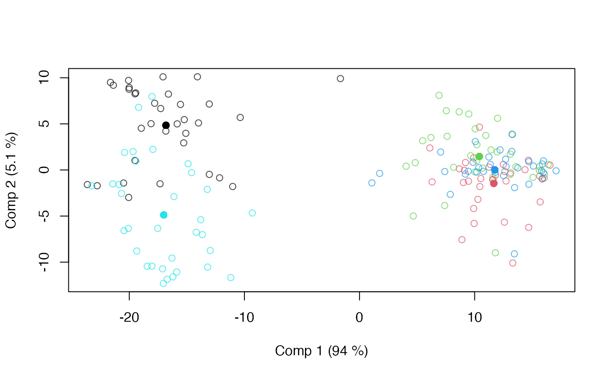
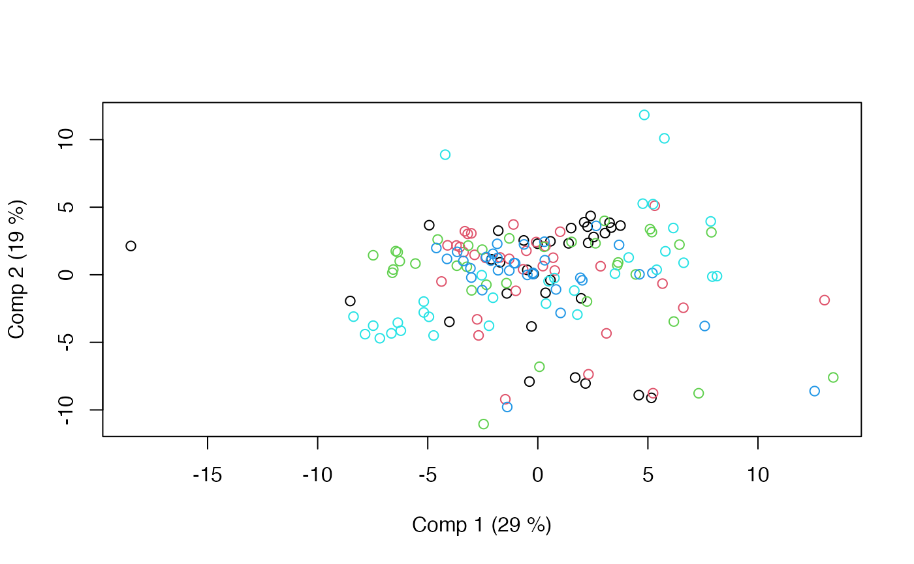
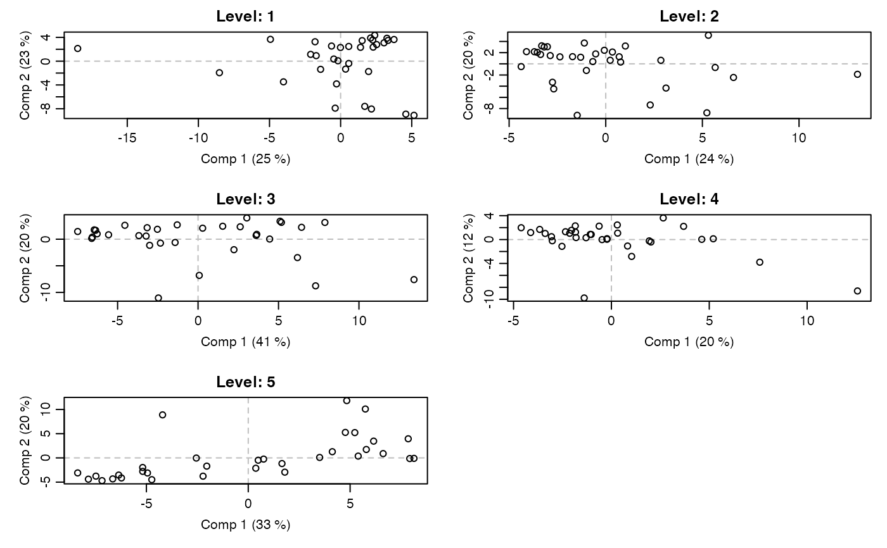

This MSCA implementation assumes a single factor to be used as between-individuals factor.
Arguments
- formula
Model formula accepting a single response (block) and predictors. See Details for more information.
- data
The data set to analyse.
- ...
Additional arguments to
asca_fit.
Value
An asca object containing loadings, scores, explained variances, etc. The object has
associated plotting (asca_plots) and result (asca_results) functions.
References
Smilde, A., Jansen, J., Hoefsloot, H., Lamers,R., Van Der Greef, J., and Timmerman, M.(2005). ANOVA-Simultaneous Component Analysis (ASCA): A new tool for analyzing designed metabolomics data. Bioinformatics, 21(13), 3043–3048.
Liland, K.H., Smilde, A., Marini, F., and Næs,T. (2018). Confidence ellipsoids for ASCA models based on multivariate regression theory. Journal of Chemometrics, 32(e2990), 1–13.
See also
Main methods: asca, apca, limmpca, msca, pcanova, prc and permanova.
Workhorse function underpinning most methods: asca_fit.
Extraction of results and plotting: asca_results, asca_plots, pcanova_results and pcanova_plots
Examples
# Load candies data
data(candies)
# Basic MSCA model with a single factor
mod <- msca(assessment ~ candy, data=candies)
print(mod)
#> Multilevel Simultaneous Component Analysis fitted using 'lm' (Linear Model)
#> Call:
#> msca(formula = assessment ~ candy, data = candies)
summary(mod)
#> Multilevel Simultaneous Component Analysis fitted using 'lm' (Linear Model)
#> - SS type II, sum coding, restricted model, least squares estimation
#> Sum.Sq. Expl.var.(%)
#> Between 33416.66 74.48
#> Within 11450.62 25.52
# Result plotting for first factor
loadingplot(mod, scatter=TRUE, labels="names")
scoreplot(mod)

# Within scores
scoreplot(mod, factor="within")

# Within scores per factor level
par.old <- par(mfrow=c(3,2), mar=c(4,4,2,1), mgp=c(2,0.7,0))
for(i in 1:length(mod$scores.within))
scoreplot(mod, factor="within", within_level=i,
main=paste0("Level: ", names(mod$scores.within)[i]),
panel.first=abline(v=0,h=0,col="gray",lty=2))
par(par.old)

# Permutation testing
mod.perm <- asca(assessment ~ candy * assessor, data=candies, permute=TRUE)
summary(mod.perm)
#> Anova Simultaneous Component Analysis fitted using 'lm' (Linear Model)
#> - SS type II, sum coding, restricted model, least squares estimation, 1000 permutations
#> Sum.Sq. Expl.var.(%) p-value
#> candy 33416.66 74.48 0
#> assessor 1961.37 4.37 0
#> assessor:candy 3445.73 7.68 0
#> Residuals 6043.52 13.47 NA